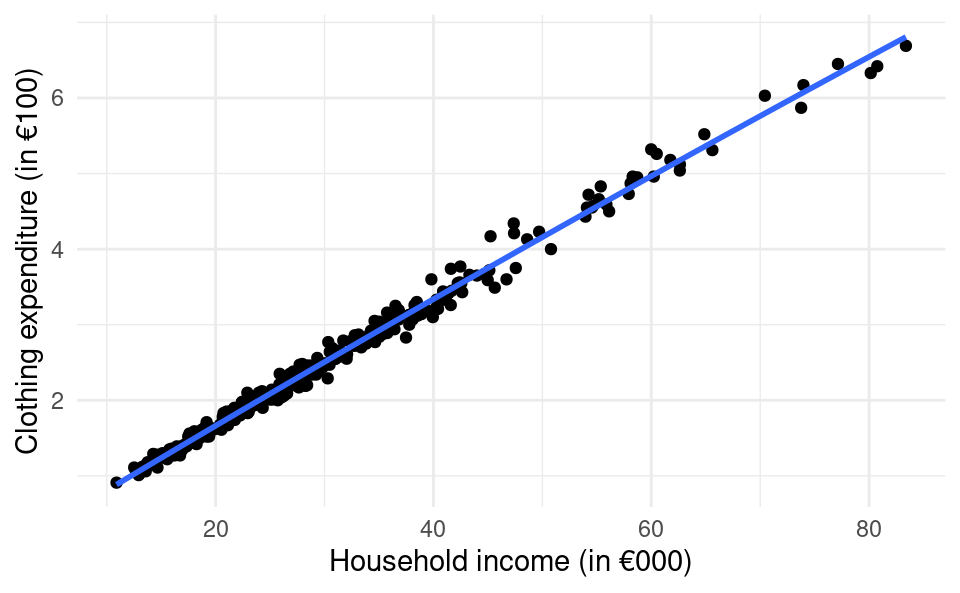
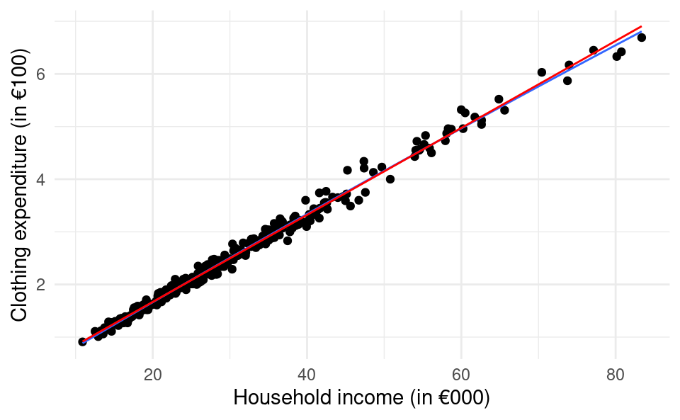

In this chapter we will discuss how to model non-linear relationships between X and Y.
In the simple linear regression model with \mathbb{E}\left[ Y_i|x_i\right]=\beta_0 + \beta_1 x_i, if x_i increases by 1 unit, \mathbb{E}\left[ Y_i|x_i\right] increases by \beta_1 units no matter the value of x.
With the multiple linear regression model, we can use x_i^2 as a second variable in the model to make \mathbb{E}\left[ Y_i|x_i\right] a quadratic function of x_i:
\mathbb{E}\left[ Y_i|x_i\right]=\beta_0 + \beta_1 x_i+\beta_2 x_i^2
Now as x_i changes, the change in \mathbb{E}\left[ Y_i|x_i \right] depends on the initial value of x_i. Let’s look at \mathbb{E}\left[ Y_i|x_i \right] for different values of x_i:
\begin{split}
\mathbb{E}\left[ Y_i|x_i=0 \right]&=\beta_0\\
\mathbb{E}\left[ Y_i|x_i=1 \right]&=\beta_0 + \beta_1 \cdot 1 + \beta_2 \cdot 1\\
\mathbb{E}\left[ Y_i|x_i=2 \right]&=\beta_0 + \beta_1 \cdot 2 + \beta_2 \cdot 4 \\
\mathbb{E}\left[ Y_i|x_i=3 \right]&=\beta_0 + \beta_1 \cdot 3 + \beta_2 \cdot 9
\end{split}
As x_i goes from 0 to 1, \mathbb{E}\left[ Y_i|x_i \right] increases by \beta_1 + \beta_2. But when x_i goes from 1 to 2, \mathbb{E}\left[ Y_i|x_i \right] increases by \beta_1 + 3\beta_2. The change depends on the value of x_i!
This modeling approach is useful if the underlying relationship between X and Y is non-linear and a quadratic function is better suited to fit the relationship.
22.2 Estimation in R
We will now learn how we can estimate a model like this in R. The model we want to estimate is:
Call:
lm(formula = clothing_exp ~ hh_inc + hh_inc_sq, data = df)
Residuals:
Min 1Q Median 3Q Max
-0.31144 -0.05935 -0.00628 0.06120 0.40051
Coefficients:
Estimate Std. Error t value Pr(>|t|)
(Intercept) -0.06057699 0.03156091 -1.919 0.05590 .
hh_inc 0.08738403 0.00177497 49.231 < 2e-16 ***
hh_inc_sq -0.00006019 0.00002177 -2.764 0.00606 **
---
Signif. codes: 0 '***' 0.001 '**' 0.01 '*' 0.05 '.' 0.1 ' ' 1
Residual standard error: 0.1053 on 297 degrees of freedom
Multiple R-squared: 0.9918, Adjusted R-squared: 0.9917
F-statistic: 1.788e+04 on 2 and 297 DF, p-value: < 2.2e-16
There is also a way in R to include squared terms (or any other function) of a variable without having to create a new variable. We can just make the transformation directly within the formula in the lm() function. We just have to put it inside the I() function (where I stands for “inhibit interpretation”).1
df <-read.csv("clothing-exp.csv")summary(lm(clothing_exp ~ hh_inc +I(hh_inc^2), data = df))
Call:
lm(formula = clothing_exp ~ hh_inc + I(hh_inc^2), data = df)
Residuals:
Min 1Q Median 3Q Max
-0.31144 -0.05935 -0.00628 0.06120 0.40051
Coefficients:
Estimate Std. Error t value Pr(>|t|)
(Intercept) -0.06057699 0.03156091 -1.919 0.05590 .
hh_inc 0.08738403 0.00177497 49.231 < 2e-16 ***
I(hh_inc^2) -0.00006019 0.00002177 -2.764 0.00606 **
---
Signif. codes: 0 '***' 0.001 '**' 0.01 '*' 0.05 '.' 0.1 ' ' 1
Residual standard error: 0.1053 on 297 degrees of freedom
Multiple R-squared: 0.9918, Adjusted R-squared: 0.9917
F-statistic: 1.788e+04 on 2 and 297 DF, p-value: < 2.2e-16
We get the same result and saved one line of code. More importantly we can keep our data frame df “cleaner” by not having an extra variable in it that we only need for this regression.
Now let’s interpret the results. The both the level term hh_inc and the squared term I(hh_inc^2) are statistically significant. The p-value for the first term is very close to zero and is 0.00606 for the second term. Therefore there is statistical evidence of a non-linear relationship between household income and clothing expenditure.
The level term is positive and the quadratic term is negative. When this occurs the functional form has an inverse-U shape:
This means for small income levels, as income increases clothing expenditure increases on average. But as income rises, unit increases in income has a smaller effect on clothing expenditure. For very high levels of income, eventually increases in income leads to a decrease in clothing expenditure, but this might be outside the range of our data.
Let’s take a look at this in the data.
library(ggplot2)df <-read.csv("clothing-exp.csv")ggplot(df, aes(hh_inc, clothing_exp)) +geom_point() +geom_smooth(method ="lm", formula = y ~ x +I(x^2), se =FALSE) +xlab("Household income (in €000)") +ylab("Clothing expenditure (in €100)") +theme_minimal()

When we fit the quadratic function to the data the function almost appears linear! This is because the estimate of \beta_2 is very very small (-0.0000601). Although the coefficient estimate is statistically significant, the fact that it is so small it has very little impact on the predictions.
Let’s compare it to a standard linear model without a quadratic term, which we add to the plot in red.
library(ggplot2)df <-read.csv("clothing-exp.csv")ggplot(df, aes(hh_inc, clothing_exp)) +geom_point() +geom_smooth(method ="lm", formula = y ~ x +I(x^2), se =FALSE,lwd =0.5) +geom_smooth(method ="lm", formula = y ~ x, color ="red", se =FALSE,lwd=0.5) +xlab("Household income (in €000)") +ylab("Clothing expenditure (in €100)") +theme_minimal()

It looks almost identical. The blue line is only slightly different at very high levels in income.
If we compare the R^2s from both models we will also see that adding the quadratic term only explains a very small amount more of the variation in clothing expenditure:
df <-read.csv("clothing-exp.csv")summary(lm(clothing_exp ~ hh_inc, data = df))$r.squared
[1] 0.9915508
summary(lm(clothing_exp ~ hh_inc +I(hh_inc^2), data = df))$r.squared
[1] 0.9917628
The linear model can explain 99.155%, while the quadratic model can explain 99.176%. So although the quadratic model has more explanatory power, we may prefer the simpler model for ease of interpretation because it is almost as good.
If we wanted to estimate a model \mathbb{E}[Y_i|x_{i1},x_{i2}]=\beta_0+\beta_1 (x_{i1} + x_{i2}), i.e. a simple linear regression model with Y_i explained by the sum of x_{i1} and x_{i2} we can’t just do lm(y ~ x1 + x2, data = df). This is because this would actually estimate the model \mathbb{E}[Y_i|x_{i1},x_{i2}]=\beta_0+\beta_1 x_{i1} + \beta_2 x_{i2}. To “inhibit” R from “interpreting” the + as adding a new variable we can use the I() function (the “inhibit interpretation” function). We would use it like this: lm(y ~ I(x1 + x2), data = df).↩︎